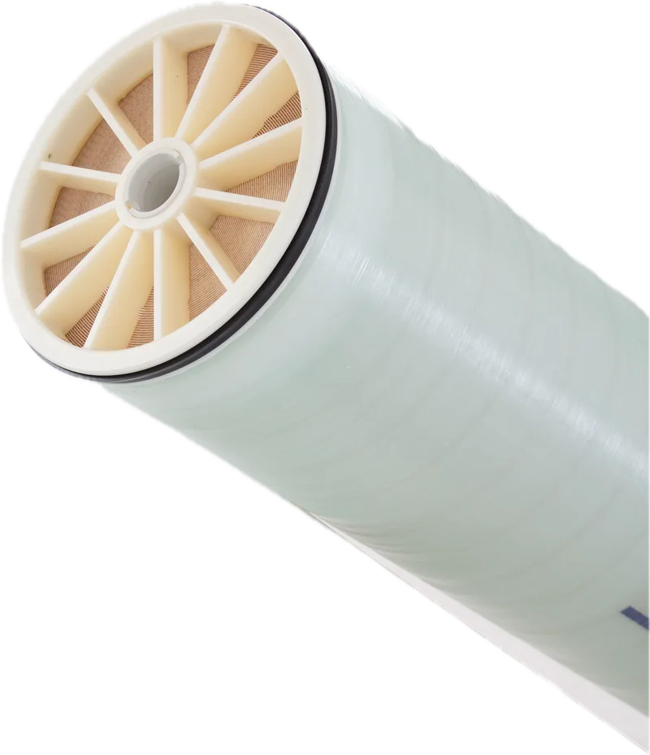

التطبيقات
ستة مجالات، مرتبطة بمنتجات حقيقية ونتائج حقيقية.
يشرح كل مجال أدناه تحدّي المياه، ودور الغشاء، وما يجب التحقق منه قبل التصميم، ومنتجات HUAXIN المناسبة. لا يوجد غشاء يناسب كل كيمياء مياه، لذا اعتبر هذا نقطة انطلاق للحوار مع مهندسينا.
التصريف الصفري للسوائل
تتسم مياه الصرف الصناعي الموجهة إلى التصريف الصفري بارتفاع الملوحة والعسر، وقابلية عالية للاتساخ، وتحتاج إلى تنظيف مكثّف متكرر. والأغشية التي تفقد قدرتها على الرفض أو تتسخ بسرعة تُحمّل المبخرات والمبلورات عبئًا أكبر.
دور الغشاء
يركّز التناضح العكسي التيار قبل المعالجة الحرارية. وتُختار العناصر هنا لمقاومتها للاتساخ وتحمّلها للتنظيف ومقاومتها للأكسدة، وليس لنسبة الرفض في اليوم الأول فقط.
اعتبارات التصميم
- تحدد المواد الصلبة الذائبة الكلية والعسر والكبريتات في مياه التغذية خطر الترسّب
- تكرار التنظيف وكيمياؤه (pH من 1 إلى 13 لفترات قصيرة لأغشية HUAXIN للتناضح العكسي)
- المعالجة المسبقة ومؤشر SDI ≤ 5 عند العنصر
تشغيل طويل الأمد: التصريف الصفري الصناعي اختبار ميداني مقارن: التصريف الصفري لعصارة المكبات
مقاوم للاتساخ

عنصر تناضح عكسي مقاوم للاتساخ
تناضح عكسي مقاوم للتلوث للمياه قليلة الملوحة عالية الاتساخ دون 5,000 ppm، مُثبت ميدانيًا على مدى 693 يومًا في إعادة استخدام مياه المناجم.
مياه البحر

عنصر تناضح عكسي لتحلية مياه البحر
تناضح عكسي عالي الرفض وعالي التدفق لمياه تغذية تتجاوز 10,000 ppm. لا تُستخدم معالجة لاحقة مؤكسِدة لرفع الأداء الأولي.
ذو صلة أيضًا: HX-BM
مياه شرب عالية الجودة
قد تحمل المياه السطحية ومياه الآبار البلدية عسرًا ولونًا ورائحة وملوثات دقيقة، بينما تُزيل إزالة المعادن الكاملة المعادن التي تمنح الماء مذاقًا جيدًا.
دور الغشاء
يُليّن الترشيح النانوي الماء ويزيل المواد العضوية والملوثات الدقيقة مع الاحتفاظ بجزء من المعادن المفيدة؛ ويزيل الترشيح الفائق السابق له الجسيمات والكائنات الدقيقة.
اعتبارات التصميم
- العسر المستهدف والاحتفاظ بالمعادن
- متطلبات شهادات مياه الشرب المحلية (غير مذكورة في الدليل؛ استفسر من HUAXIN)
- ترشيح فائق أو معالجة مسبقة أخرى قبل الترشيح النانوي
اختبار ميداني مقارن: مياه جوفية ساحلية في الشرق الأوسط اختبار ميداني مقارن: مياه جوفية في الشرق الأوسط
مياه الشرب

عنصر ترشيح نانوي لمياه شرب عالية الجودة
ترشيح نانوي عالي التدفق للتنقية العميقة للمياه البلدية السطحية أو مياه الآبار، مع الاحتفاظ بالمعادن المفيدة للمذاق.
ترشيح فائق عمودي
وحدة ترشيح فائق (UF) عمودية
أعمدة ترشيح فائق من ألياف PVDF المجوفة بمسام أقل من 30 nm، لتنقية المياه ومعالجة مياه الصرف.
ذو صلة أيضًا: HX-XLP
إعادة استخدام مياه الصرف البلدية
تتفاوت جودة المياه البلدية المستصلحة، وتحمل مواد عضوية وحملًا حيويًا يُتلف الأغشية اللاحقة.
دور الغشاء
يستبدل MBR الترويق بالفصل الغشائي؛ ويصقل الترشيح الفائق والتناضح العكسي المقاوم للاتساخ المياه المعالجة لإعادة استخدامها.
اعتبارات التصميم
- الحمل الحيوي وتحديد حجم MBR (150–400 m³/d لكل وحدة HUAXIN)
- احتمال الاتساخ في مرحلة التناضح العكسي
- استهلاك الطاقة وأهداف التدفق
مفاعل حيوي غشائي

وحدة مفاعل حيوي غشائي (MBR)
وحدات بإطار من الفولاذ المقاوم للصدأ وبمسافة تزيد على 100 mm بين صفائح الأغشية، للمعالجة البيولوجية البلدية والصناعية.
ترشيح فائق عمودي
وحدة ترشيح فائق (UF) عمودية
أعمدة ترشيح فائق من ألياف PVDF المجوفة بمسام أقل من 30 nm، لتنقية المياه ومعالجة مياه الصرف.
ذو صلة أيضًا: HX-BWFR
تحلية مياه البحر
تتسم مياه البحر بملوحة عالية واحتمال كبير للاتساخ الحيوي؛ ورفض البورون والأداء المستقر طويل الأمد لا يقلّان أهمية عن الأرقام الأولية.
دور الغشاء
تتولى عناصر التناضح العكسي لمياه البحر مرحلة التحلية، ويمكن استخدام العناصر نفسها حيث تُستخلص منتجات ثانوية عالية القيمة من المحلول المركّز.
اعتبارات التصميم
- ملوحة مياه التغذية وحرارتها وأهداف البورون
- التحكم في الاتساخ الحيوي والمعالجة المسبقة
- ضغط تشغيل يصل إلى 8.0 MPa لعنصر HX-SW
تشغيل طويل الأمد: إعادة استخدام مياه المناجم، التناضح العكسي المرحلة الثانية — الاتساخ
استخلاص الليثيوم من البحيرات المالحة
تختلف محاليل البحيرات المالحة كثيرًا في تركيبها؛ ويمثل فصل الليثيوم عن المغنيسيوم والأيونات الأخرى التحدي الأساسي.
دور الغشاء
يُصمَّم الترشيح النانوي الانتقائي والتناضح العكسي وفق كل محلول ملحي لتركيز الليثيوم وتقليل الاعتماد على المواد المازّة أو العوامل المساعدة.
اعتبارات التصميم
- نسبة Mg/Li وتركيب المحلول الملحي
- تُطوَّر أغشية مخصّصة لكل مشروع
- اختبارات تجريبية قبل التصميم الكامل
فصل الأملاح الصناعي

عنصر ترشيح نانوي لفصل الأملاح الصناعي
ترشيح نانوي عالي الانتقائية يحتجز المواد العضوية الأكبر من 200 Da والأملاح ثنائية التكافؤ، ويسمح بمرور جزء من الأملاح أحادية التكافؤ.
مياه الشرب
عنصر ترشيح نانوي لمياه شرب عالية الجودة
ترشيح نانوي عالي التدفق للتنقية العميقة للمياه البلدية السطحية أو مياه الآبار، مع الاحتفاظ بالمعادن المفيدة للمذاق.
مياه عالية النقاء للصناعة
تحتاج صناعات أشباه الموصلات والطب والغذاء إلى مياه نقية باستمرار وبتكلفة طاقة منخفضة.
دور الغشاء
يوفّر التناضح العكسي منخفض وفائق الانخفاض في الضغط رفضًا عاليًا للأملاح وتدفقًا عاليًا بوصفه جوهر التنقية متعددة المراحل.
اعتبارات التصميم
- تناضح عكسي في مرور ثانٍ ومراحل صقل
- تغذية دون 1,000–2,000 ppm لعنصري XLP / LP
- الطاقة لكل m³ عند تدفق التصميم
ضغط منخفض جدًا

عنصر تناضح عكسي بضغط منخفض جدًا
تدفق نفاذ عالٍ عند ضغط تشغيل منخفض جدًا، لمياه تغذية أقل من 1,000 ppm.
ضغط منخفض

عنصر تناضح عكسي منخفض الضغط
تناضح عكسي موفّر للطاقة وعالي النفاذ لمياه تغذية دون 2,000 ppm، ويتحمّل التنظيف الحمضي والقلوي المتكرر.
ذو صلة أيضًا: HX-BW
تحدّث إلى مهندس
أخبرنا عن مياهك.
أرسل تحليل مياه التغذية وأهدافك، وسيوصي مهندسو HUAXIN بالعنصر والتكوين المناسبين.